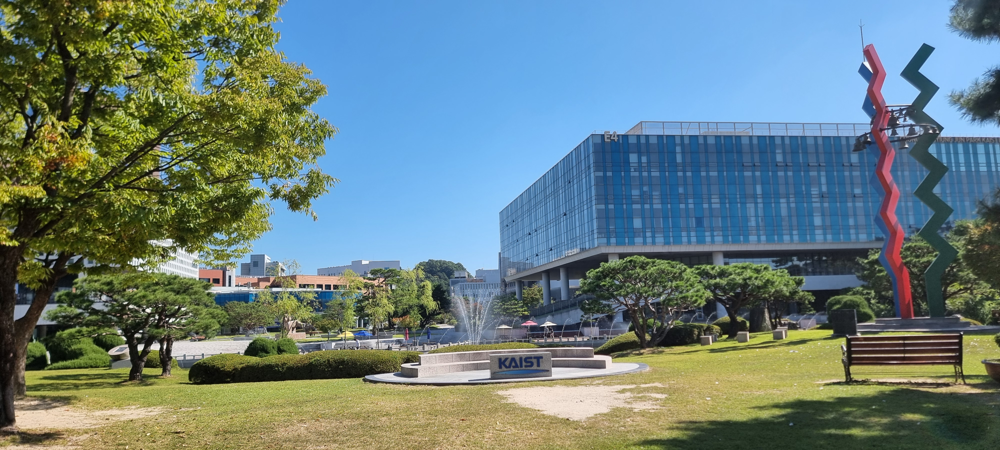

Hello, I'm Taeuk.
I am a master’s student in Aerospace Engineering at KAIST, working on Orbital Edge Computing and Satellite Networks at the Aerospace Communications & Applied Intelligence (ACAI) Lab.
Interests
- Satellite Networks
- Starlink
- Internet Measurement
- Orbital Edge Computing
- Space Data Centers
- Satellite Constellation Design
- Multidisciplinary Optimization
Education
-
M.S. in Aerospace Engineering, 2027 (expected)
Korea Advanced Institute of Science and Technology (KAIST), Daejeon, Korea -
B.S. in Astronomy, 2025
Yonsei University, Seoul, Korea Transcript -
Sangsan High School
Jeonju, Korea